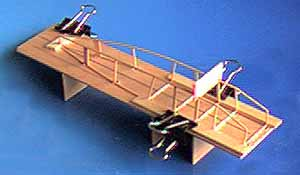
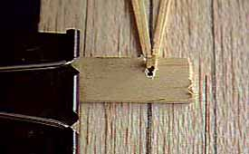
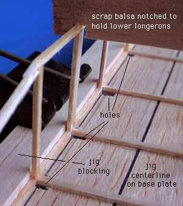

| The Andreason Biplane model has a couple of features that make assembling the fuselage slightly tricky. First, the cabane struts are integral to the fuse sides, making it tough to assemble the fuse upside down. Second, the lower longerons are closer together than the upper ones. |
|
Here are a few pix of a simple jig I made to help with the task. It can easily be adapted to any model.
This first image shows the overall layout of the jig. A scrap of bullet-proof 1/8" sheet was used as a base since I couldn't figure out how to use it in a model. A rough layout of the fuse was sketched on the sheet including a centerline for reference. Holes were drilled at each fuse/cross piece intersection to prevent gluing the model to the jig and to provide clearance for the cabane struts. Next, legs were added to protect the cabanes. |
 |
|
By using the cross pieces and fuse sides, I was able to locate and clamp the two outer jig blocks that hold the forward fuse in alignment. To hold the bottom longerons together while adding the lower cross pieces, I used a scrap of balsa notched appropriately.
Another scrap of 1/8" was notched to hold the tail together, and clamped in place over the centerline.  |
 |
Return or take a look at my completed framework.
Copyright 1998, Thayer Syme. All rights reserved